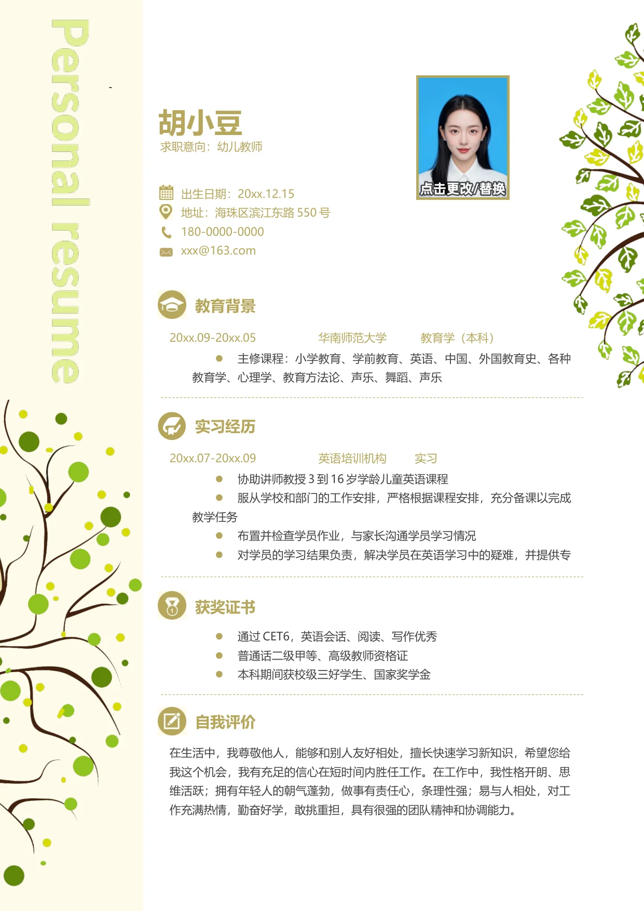

-
胡小豆
出生日期：20xx.12.15
地址：海珠区滨江东路550 号
180-0000-0000
xxx@163.com
教育背景
20xx.09-20xx.05 华南师范大学 教育学（本科）
•
主修课程：小学教育、学前教育、英语、中国、外国教育史、各种
教育学、心理学、教育方法论、声乐、舞蹈、声乐
获奖证书
•
通过CET6，英语会话、阅读、写作优秀
•
普通话二级甲等、高级教师资格证
•
本科期间获校级三好学生、国家奖学金
求职意向：幼儿教师
20xx.07-20xx.09 英语培训机构 实习
•
协助讲师教授3 到16 岁学龄儿童英语课程
•
服从学校和部门的工作安排，严格根据课程安排，充分备课以完成
教学任务
•
布置并检查学员作业，与家长沟通学员学习情况
•
对学员的学习结果负责，解决学员在英语学习中的疑难，并提供专
实习经历
自我评价
在生活中，我尊敬他人，能够和别人友好相处，擅长快速学习新知识，希望您给
我这个机会，我有充足的信心在短时间内胜任工作。在工作中，我性格开朗、思
维活跃；拥有年轻人的朝气蓬勃，做事有责任心，条理性强；易与人相处，对工
作充满热情，勤奋好学，敢挑重担，具有很强的团队精神和协调能力。